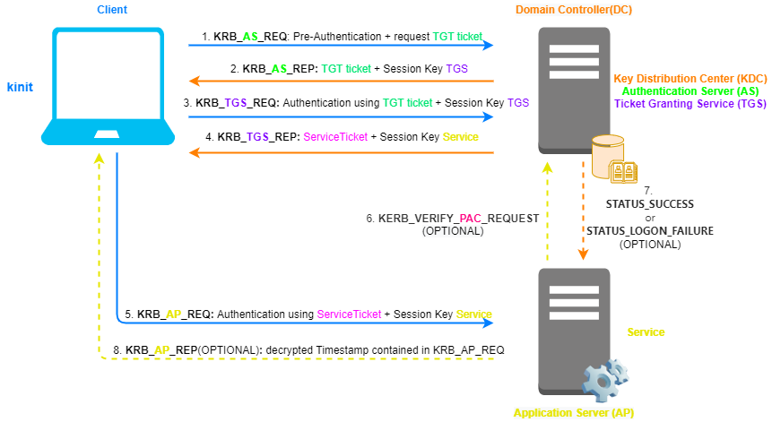

Kerberos
In Active Directory (AD), two authentication
protocols can be used
• Kerberos: default authentication protocol from Windows 2000
• NTLMv2
Challenge/Response: it provides authentication between two parties without a third trusted party. If in AD
environment for different reasons, Kerberos cannot be used, Windows fall back to NTLM
Kerberos is a
network authentication protocol based on tickets,
developed by MIT. It
is an open standard, here the
source code(differently
from NTLM that was proprietary).
The actors involved in a Kerberos transaction/authentication are:
• The
KDC (Kerberos Distribution
Center) main process installed on the
Domain Controller(DC).
KDC
provide two services:
◇
Authentication Service (AS) ◇
Ticket-Granting Service (TGS)• The
Client that is requesting access to the
Service• The
AP(Application Server) which offer the
Service to which the Client is attempting to obtain access
Because
of these three components, Kerberos is named as the three-headed mythological dog.
Kerberos protocol allows the
Client and a
Service (in the Application Server) to authenticate to each other
over an insecure network channel, to do that both Client and Service have to trust a third party: the
Kerberos Distribution Center.
Transport
LayerKerberos uses either UDP or TCP as transport protocol, which sends data in cleartext. Due to
this Kerberos is responsible for providing encryption.
Ports used by Kerberos are UDP/88 and TCP/88, which
should be listen in KDC
Encryption Keys•
KDC(krbtgt) secret key → krbtgt account's
password hashed with
string2key function. krbtgt
account is the default account for the Key Distribution Center (KDC) service. The password is assigned to the krbtgt
account automatically by the system during the creation of the
KDC•
Client(user) secret key → user account's
password hashed with
string2key function•
Service secret key → service account's
password hashed with
string2key function•
Session Key
TGS → session key shared between the
Client and the
TGS(service on the
Kerberos Distribution Center(KDC))
• Session Key
Service → session key shared between the
Client
and the
Service (service on the
Application
Server(AP))
TicketsIn
rfc1510 we can find the format and content of a
ticket
•
Ticket Granting Ticket (TGT) → encrypted using the
KDC secret key(krbtgt account's password
hashed with
string2key
function) , so that only the
Domain Controller can decrypt it. By default
TGT is valid for 10 hours and contain:
◇
PrincipalService: In .pcap, we can find it as sname.
krbtgt/realm@REALM is the principal used when we ask for
Ticket Granting
Ticket(TGT) (e.g.: krbtgt/example.com@EXAMPLE.COM)
◇
IP_list: list of IP addresses that indicate the host where it is
possible to use the ticket which will be issued
◇
Timestamp:
date and time. It is important that the time on the computers on a network are synchronized in order for Kerberos
function properly.
◇
Lifetime: maximum validity time
(requested) for the ticket
◇
Session Key TGS: session key shared between the
Client and the
TGS ◇
PAC•
ServiceTicket →
encrypted using the
Service secret
key(service account's password hashed with
string2key
function), so that only the
Service on the Application Server can decrypt
it.
◇
PrincipalClient ◇
PrincipalService ◇
IP_list ◇
Timestamp ◇
Lifetime ◇
Session Key
Service ◇
PACThe Vulnerability of the Kerberos protocol are
described in the chapter:
Exploitation
→ Low Hanging Fruits → Windows Authentications → KerberosBibliography:
•
https://tools.ietf.org/html/rfc4120 (2005)
•
https://tools.ietf.org/html/rfc1510 (1993)
•
https://zeroshell.org/kerberos/kerberos-operation/•
https://www.tarlogic.com/en/blog/how-kerberos-works/•
https://docs.oracle.com/cd/E23824_01/html/821-1456/refer-11.html•
https://docs.microsoft.com/en-us/openspecs/windows_protocols/ms-kile/b4af186e-b2ff-43f9-b18e-eedb366abf13•
https://techdirectarchive.com/2020/04/11/active-directory-authentication-kerberos-and-ntlm/•
https://www.redsiege.com/wp-content/uploads/2020/04/20200430-kerb101.pdf
{kind=link}